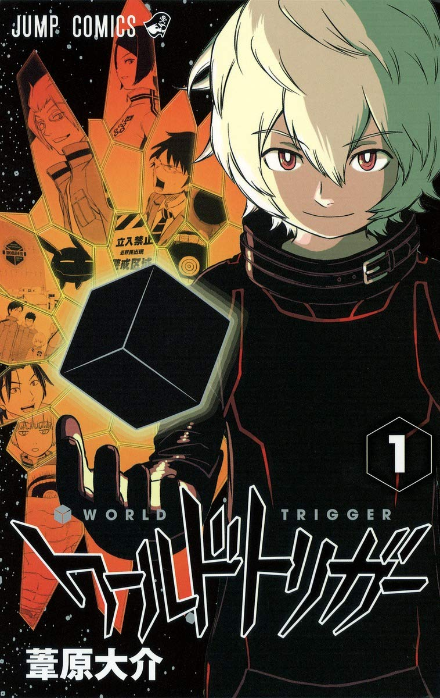

site_Name
site_Name
comic ランキング
【第1位】 進撃の巨人
講談社 著者：諫山創

”駆逐してやる!! この世から…一匹残らず!!”
巨人が全てを支配する世界。巨人の餌と化した人類は巨大な壁を築き、碧街への自由と引き換えに侵入を防いでいた・だが名ばかりの平和は壁を越える大巨人の出現により崩れ、絶望の戦いが始まってしまう。
【第2位】 ワールドトリガー
集英社 著者：葦原大介
”勝ち目が薄いからって・・・逃げるわけにはいかない”
異次元からの侵略者「近界民」の脅威にさらされている三門市。
そこに住む少し正義感の強い中学生・三雲修は、謎の転校生・空閑遊真と出会う。
遊真の行動に振り回される修の運命は!?
最新型SFアクション始動!!
【第3位】 NARUTO -ナルト-
少年ジャンプ 著者：岸本斉史

”俺が諦めるのを、諦めろ！”
ここは木ノ葉隠れの里。忍術学校の問題児、ナルトは今日もイタズラ三昧!!
そんなナルトのでっかい夢は歴代の勇者、火影の名を受けついで、先代を越える忍者になることだ。だがナルトには出生の秘密が...!? 引用少年ジャンプ